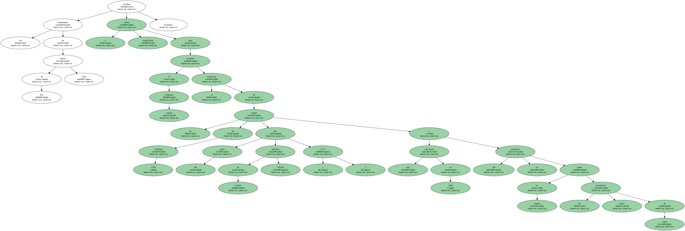
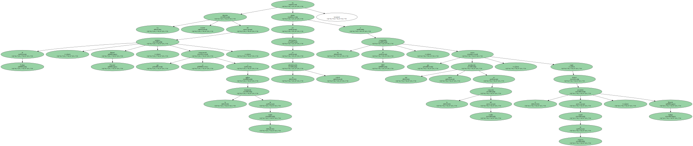
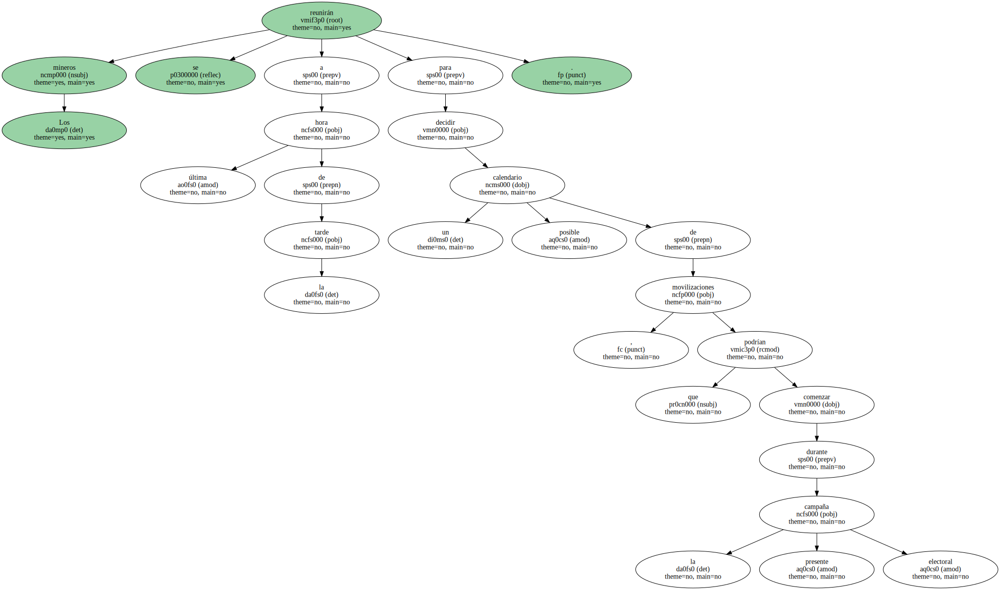
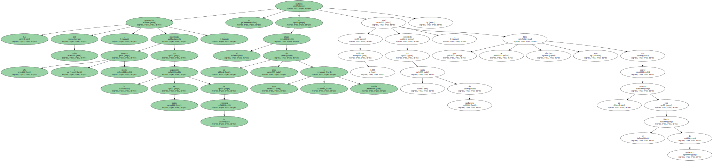
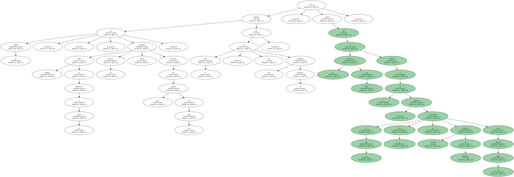
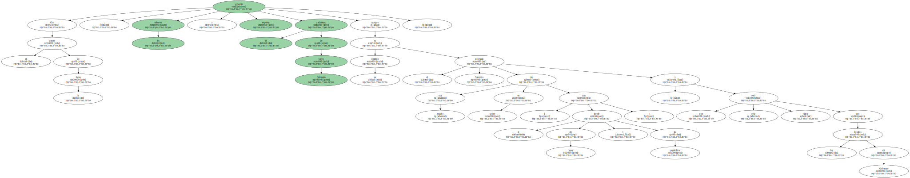
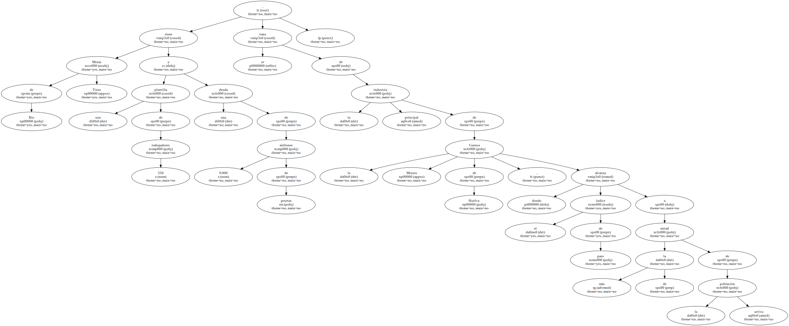

Los trabajadores de Minas de Río Tinto estudian volver a movilizarse para reclamar al Gobierno central la concesión de un crédito de 1.500 millones por parte del Instituto de Crédito Oficial ( ICO ) que solicitaron en 1998 y que les permitiría poner en marcha un nuevo yacimiento de cobre.
La reciente dimisión del ministro de Trabajo , Manuel Pimentel , que se comprometió a agilizar la tramitación de los fondos , ha dejado sin interlocutores en la administración central a los responsables de MRT , que temen una nueva paralización en la concesión del crédito , según declaró el presidente del comité de empresa , Ricardo Gallego.
Los mineros se reunirán a última hora de la tarde para decidir un posible calendario de movilizaciones , que podrían comenzar durante la presente campaña electoral.
La producción del cobre , paralizada durante año y medio por la suspensión de pagos de la empresa , se reabrirá en el plazo de un mes o mes y medio aval de 1.000 millones concedido por la Junta de Andalucía , que se hizo efectivo ayer tras cerrar un acuerdo con el Banco de Andalucía.
El PSOE , dijo Gallego en referencia a la Junta , " ha aportado los fondos tarde " después de una espera de un año mientras que el PP " aún no ha cumplido su promesa " , y añadió que la situación de MRT es similar a la de Ercross , a la que el ICO le concedió 10.000 millones de pesetas para afrontar su crisis.
Con el dinero de la Junta , los mineros volverán a explotar el yacimiento de Cerro Colorado aunque su objetivo es el proyecto Salomón , mucho más rico en cobre ( con el doble de leyes y de rentabilidad ) y que sólo será viable con los fondos del Gobierno.
El crédito ICO es imprescindible , según los mineros , para que la empresa , de la cual los trabajadores son también accionistas , salga de la suspensión de pagos en la que se encuentra.

Minas de Rio Tinto tiene una plantilla de 550 trabajadores y una deuda de 9.000 millones de pesetas , se trata de la principal industria de la Cuenca Minera de Huelva , donde el índice de paro alcanza a más de la mitad de la población activa.
